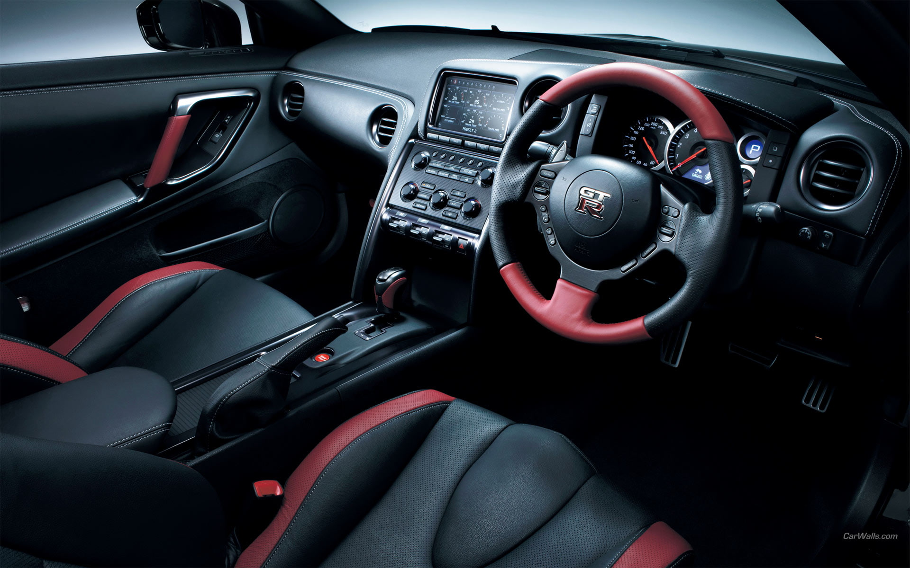
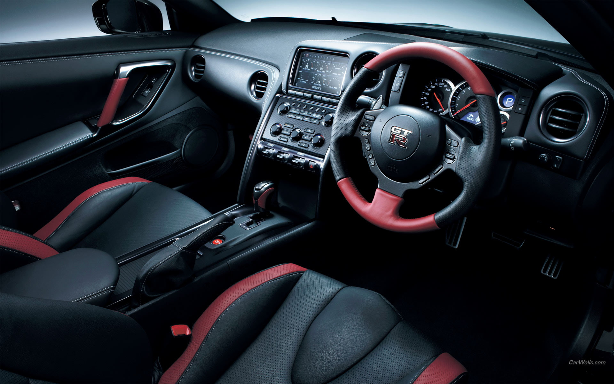
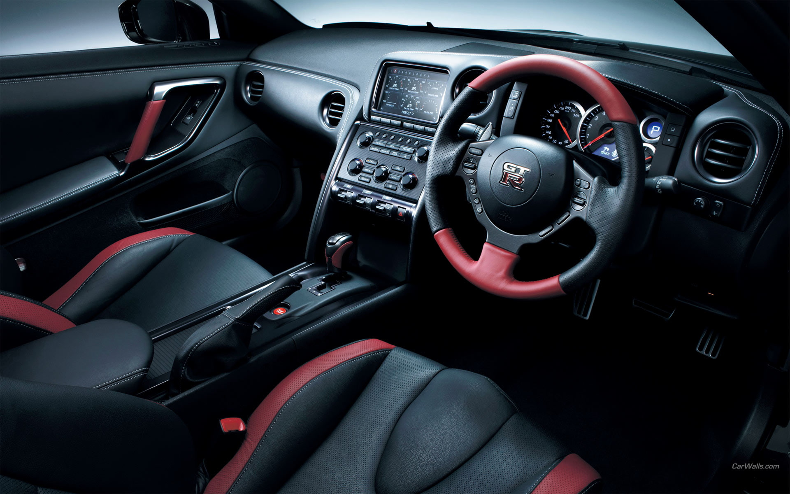

The Nissan Skyline GT-R (Japanese: 日産・スカイラインGT-R, Hepburn: Nissan
Sukairain GT-R) is a sports car based on the Nissan Skyline range. The
first cars named "Skyline GT-R" were produced between 1969 and 1972 under
the model code KPGC10, and were successful in Japanese touring car racing
events. This model was followed by a brief production run of
second-generation cars, under model code KPGC110, in 1973.
After a 16-year hiatus, the GT-R name was revived in 1989 as the BNR32
("R32") Skyline GT-R. Group A specification versions of the R32 GT-R were
used to win the Japanese Touring Car Championship for four years in a row.
The R32 GT-R also had success in the Australian Touring Car Championship,
with Jim Richards using it to win the championship in 1991 and Mark Skaife
doing the same in 1992, until a regulation change excluded the GT-R in
1993. The technology and performance of the R32 GT-R prompted the
Australian motoring publication Wheels to nickname the GT-R "Godzilla" in
its July 1989 edition. Wheels then carried the name through all the
generations of Skyline GT-Rs, most notably the R34 GT-R, which they
nicknamed "Godzilla Returns", and described as "The best handling car we
have ever driven". In tests conducted by automotive publications, R34 GT-R
have covered a quarter of a mile (402 metres) in 12.2 seconds from a
standing start time and accelerated from 0–100 km/h (0–62 mph) in 4.4
seconds. It was one of the fastest accelerating production vehicles at the
time.
The Skyline GT-R became the flagship of Nissan performance, showcasing
many advanced technologies including the ATTESA E-TS All-wheel drive
system and the Super-HICAS four-wheel steering. Today, the car is popular
for import drag racing, circuit track, time attack and events hosted by
tuning magazines. Production of the Skyline GT-R ended in August 2002. The
car was replaced by the GT-R (R35), an all-new vehicle based on a enhanced
platform of the Skyline V36 platform. Although visibly different, the two
vehicles share similar design features and are manufactured in the same
factory.
The Skyline GT-R was never manufactured outside Japan, and the sole export
markets were Hong Kong, Singapore, Australia and New Zealand, in 1991, and
the UK (in 1997, due to the Single Vehicle Approval scheme) as used
Japanese imports.
Despite this, the car has become an iconic sports car as a Grey import
vehicle,in countries from the Western World (mainly the United Kingdom,
Australia, New Zealand, South Africa, Ireland, Canada, and the United
States). It has become notable through pop culture such as The Fast and
the Furious, Initial D, Shakotan Boogie, Wangan Midnight, Need for Speed,
Forza, Driving Emotion Type-S, Test Drive, and Gran Turismo. In 2019,
Nismo announced that it would resume production of spare parts for all
generations of the Skyline GT-R, including body panels and engines.
The car was named at the time by BBC's Top Gear as the only true Japanese
contribution in the line of supercars, and by Jeremy Clarkson as one of
the best cars in the world.
The Nissan GT-R (Japanese: 日産・GT-R, Nissan GT-R), is a high-performance
sports car and grand tourer produced by Nissan, unveiled in 2007. It is
the successor to the Nissan Skyline GT-R, a high performance variant of
the Nissan Skyline. Although this model was the sixth-generation to bear
the GT-R name, it is no longer part of the Nissan Skyline line-up since
that name is now reserved for Nissan's luxury-sport vehicles. The GT-R is
built on the exclusively-developed PM platform, which is an evolution of
the FM platform used in the separate Nissan Skyline luxury car and the
Nissan Z sports car. The GT-R abbreviation stands for Gran Turismo–Racing,
obtained from the Skyline GT-R.
In 2006, then-Nissan CEO Carlos Ghosn determined that the GT-R would be a
global icon for the Nissan brand, and unlike its predecessors which were
only sold in least numbers of markets, the GT-R would be sold worldwide.
After more than six years of development, the production version of the
GT-R was unveiled at the 2007 Tokyo Motor Show, along with the PM platform
and featured the exclusively developed VR38DETT engine and other new
technologies. The overall body is made out of steel, aluminium and premium
materials such as carbon-fiber. The GT-R has had several facelifts,
updates and special editions throughout the years. The GT-R was praised
and received various accolades by automotive publications for its
performance and practicality at an affordable price. Being one of the
fastest production cars in the market, the GT-R was described as defying
the laws of physics by many publications. As well as a sports car, it has
also achieved momentous success in various motorsports. As of 2023, the
GT-R is in its sixteenth year of production.
Between 1969 and 1974, and again between 1989 and 2002, Nissan produced a
high performance version of its Nissan Skyline coupe, called the Nissan
Skyline GT-R. This car proved to be iconic for Nissan, achieving much fame
and success on the road and in motorsports.
The GT-R is an entirely new model sharing little with the Nissan Skyline
GT-R, except its signature four round tail lights. Like some later
generations of the Skyline GT-R, the GT-R has the ATTESA E-TS all-wheel
drive system with a twin-turbocharged 6-cylinder engine. But the HICAS
four-wheel-steering system was removed and the former straight-6 RB26DETT
engine was replaced with the new VR38DETT engine. Despite the GT-R's
heritage, the chassis code for the all-new version is CBA-R35 and for
later model years DBA-R35 and 4BA-R35, or R35 for short (where CBA, DBA
and 4BA stands for the emissions standard prefix), carrying on the naming
trend from previous Skyline GT-R generations.
The GT-R also retained its predecessor's nickname, Godzilla, originally
given to it by the Australian motoring publication Wheels in 1989 for its
R32 generation model.
